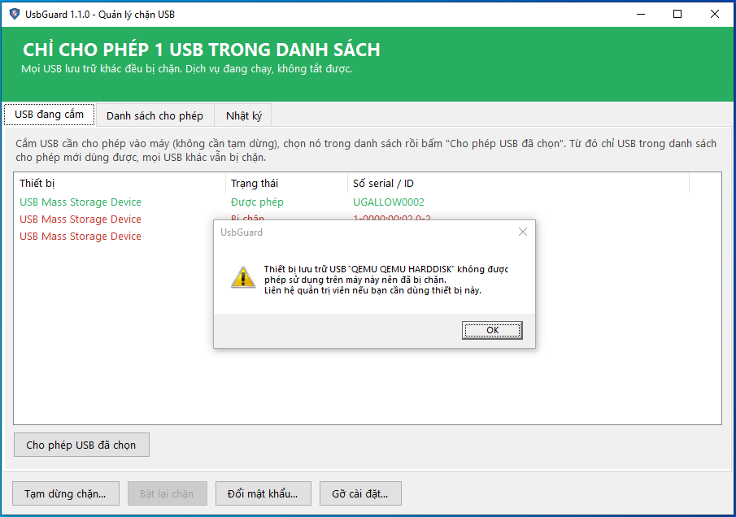
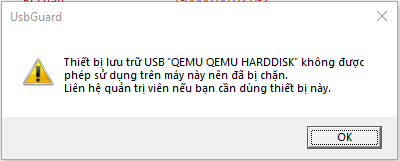

Phần mềm chặn USB flash disk trên máy tính Windows, chạy như dịch vụ không tắt được.
1. UsbGuard làm gì
Chặn mọi USB flash disk, ổ cứng di động, đầu đọc thẻ nhớ cắm vào máy. USB cắm vào không hiện ổ đĩa, không chép được dữ liệu, người dùng thấy thông báo trên màn hình.
USB đang cắm sẵn lúc cài đặt cũng bị tháo ra ngay. USB cắm vào sau khi cài thì Windows không nhận ổ ngay từ đầu (trong kiểm thử, ổ không xuất hiện lần nào).
Chuột, bàn phím, máy in, tai nghe và các thiết bị USB không phải ổ lưu trữ vẫn dùng bình thường, nên chúng không hiện trong danh sách USB của phần mềm.
Cho phép riêng những USB của công ty theo số serial: USB đó dùng được, mọi USB khác vẫn bị chặn.
Chạy ngầm cùng Windows. Người dùng thường không tắt, không xoá, không sửa được. Quản trị viên cũng không dừng được bằng services.msc hay sc stop. Bị tắt cưỡng bức (Task Manager) thì Windows tự bật lại sau khoảng 5 giây. Muốn gỡ phải có mật khẩu quản trị.
2. Yêu cầu và các file
Máy: Windows 10 hoặc Windows 11, 64-bit (Home, Pro, Enterprise đều được). Không cần cài thêm gì. Cần tài khoản có quyền Administrator để cài.
File
Dùng để
UsbGuard-Setup-1.2.1.exe
Bộ cài. Khách chỉ cần file này.
HUONG-DAN-SU-DUNG.pdf
Tài liệu này
UsbGuard-1.2.1-khong-cai-dat.zip
Dành cho bộ phận IT: bản chạy bằng dòng lệnh, cài hàng loạt bằng script (mục 9)
3. Cài đặt
Nếu trình duyệt (Chrome, Edge) báo file "không thường được tải xuống" hoặc tự chặn: mở danh sách tải xuống, bấm vào file, chọn Keep / Giữ lại (Edge: bấm dấu … rồi Keep anyway). Trình duyệt cảnh báo vì phần mềm mới, chưa có chữ ký số thương mại. Cách khác: tải từ thư mục Google Drive bằng nút Download.
Nhấp đúp UsbGuard-Setup-1.2.1.exe, bấm Yes ở hộp thoại hỏi quyền.
Nếu Windows hiện màn hình xanh "Windows protected your PC": bấm More info rồi Run anyway. Màn hình này hiện ra vì phần mềm chưa có chữ ký số thương mại, không phải virus.
Đọc điều khoản, chọn Tôi đồng ý với các điều khoản trên, bấm Tiếp theo.
Đặt mật khẩu quản trị (ít nhất 8 ký tự) và nhập lại lần nữa.
Bấm Cài đặt, chờ khoảng 10 giây, bấm Hoàn tất. Cửa sổ quản lý UsbGuard tự mở, thanh trên cùng màu đỏ ghi ĐANG CHẶN TẤT CẢ USB LƯU TRỮ là xong.
Ghi lại mật khẩu quản trị ở nơi an toàn. Mật khẩu chỉ lưu dạng mã hoá một chiều, không ai lấy lại được. Quên mật khẩu thì không tạm dừng, không cho phép USB, không gỡ được UsbGuard theo cách thông thường.
4. Cửa sổ quản lý
Mở bằng biểu tượng UsbGuard ngoài màn hình Desktop hoặc trong Start Menu (UsbGuard - Quản lý chặn USB). Mọi thay đổi đều hỏi mật khẩu quản trị. Nhập sai 5 lần liên tiếp thì bị khoá 30 giây, mỗi lần sai tiếp theo thời gian khoá gấp đôi (1 phút, 2 phút, 4 phút…), tối đa 1 giờ. Đóng mở lại phần mềm hay khởi động lại máy không xoá được thời gian khoá.

Cửa sổ quản lý trên Windows 10: 1 USB được phép (xanh), USB lạ bị chặn (đỏ) kèm thông báo vừa hiện
Màu thanh trên cùng
Ý nghĩa
Đỏ: ĐANG CHẶN TẤT CẢ USB LƯU TRỮ
Mọi USB lưu trữ đều bị chặn
Xanh lá: CHỈ CHO PHÉP … USB TRONG DANH SÁCH
Chỉ USB trong danh sách cho phép dùng được
Vàng: ĐANG TẠM DỪNG CHẶN
Mọi USB dùng được đến giờ ghi trên thanh, sau đó tự chặn lại
Nút
Việc
Tạm dừng chặn…
Cho dùng USB trong 1 đến 1440 phút (ví dụ cần chép dữ liệu hợp lệ). Hết giờ tự chặn lại.
Bật lại chặn
Đang tạm dừng mà muốn chặn ngay: bấm nút này, USB bị chặn lại lập tức, không chờ hết giờ tạm dừng
Đổi mật khẩu…
Đổi mật khẩu quản trị
Gỡ cài đặt…
Gỡ UsbGuard (xem mục 7)
Tab "Nhật ký"
Xem lịch sử: USB nào bị chặn lúc nào, ai tạm dừng, ai đổi mật khẩu
5. Khi nhân viên cắm USB
USB không hiện trong This PC và màn hình hiện thông báo như hình dưới. Thông báo tự đóng sau 15 giây.

Thông báo khi cắm USB không được phép
6. Cho phép 1 USB cụ thể (USB của công ty)
Cắm USB cần cho phép vào máy (không cần tạm dừng trước).
Mở cửa sổ quản lý UsbGuard, tab USB đang cắm. USB vừa cắm hiện ra với trạng thái Bị chặn (hoặc Bị chặn (đã tháo) nếu USB đã cắm sẵn từ trước).
Chọn dòng USB đó, bấm Cho phép USB đã chọn, nhập mật khẩu.
Sau vài giây USB hiện trong This PC và dùng được, không cần rút ra cắm lại. Từ giờ chỉ USB này dùng được, các USB khác vẫn bị chặn.
UsbGuard cho phép theo số serial của USB, nên USB khác dù cùng hãng, cùng mẫu vẫn bị chặn. Với USB rẻ tiền không có số serial, UsbGuard sẽ hỏi trước khi cho phép theo mã hãng/mẫu (khi đó mọi USB cùng mẫu đều dùng được).
Muốn thu hồi: tab Danh sách cho phép, chọn mục, bấm Xoá mục đã chọn. Danh sách trống thì UsbGuard quay về chặn tất cả.
7. Gỡ cài đặt
Mở Settings > Apps (hoặc Control Panel > Programs and Features), chọn UsbGuard, bấm Uninstall. Hoặc bấm Gỡ cài đặt… trong cửa sổ quản lý.
Nhập mật khẩu quản trị. Sai mật khẩu thì không gỡ được.
UsbGuard tự dừng, bị xoá khỏi máy, cổng USB trở lại bình thường. USB đang cắm cũng dùng được ngay, không cần rút ra cắm lại, không cần khởi động lại máy.
8. Xử lý sự cố
Hiện tượng
Cách xử lý
"Thử lại sau … giây/phút"
Đã nhập sai nhiều lần, chờ hết thời gian ghi trên thông báo rồi nhập lại.
"Sai mật khẩu quản trị" dù gõ đúng
Tắt bộ gõ tiếng Việt (Unikey, EVKey) khi gõ mật khẩu và kiểm tra phím Caps Lock.
Đã cho phép nhưng USB chưa hiện
Chờ khoảng 10 giây (UsbGuard tự nạp lại USB tối đa 3 lần). Vẫn chưa hiện thì rút USB ra cắm lại.
Ai đó đổi dịch vụ UsbGuard sang Disabled trong services.msc
UsbGuard tự trả lại Automatic trong khoảng 2 giây và ghi vào Nhật ký. Mở phần mềm quản lý cũng tự bật lại dịch vụ nếu thấy nó không chạy.
Bộ cài báo "UsbGuard đã được cài trên máy này"
Máy đã có UsbGuard. Gỡ bản cũ (mục 7) rồi cài lại.
Cần xem lịch sử USB bị chặn
Tab Nhật ký trong cửa sổ quản lý, hoặc file C:\ProgramData\UsbGuard\usbguard.log.
9. Dành cho bộ phận IT: dòng lệnh
Cài im lặng hàng loạt: UsbGuard-Setup-1.2.1.exe /VERYSILENT /ADMINPW=MatKhau. Gỡ im lặng: "C:\Program Files\UsbGuard\unins000.exe" /VERYSILENT /ADMINPW=MatKhau.
Lệnh (chạy cmd bằng Run as administrator)
Việc
UsbGuard.exe status
Trạng thái dịch vụ, chế độ, 3 tầng chặn
UsbGuard.exe devices
Liệt kê USB đang cắm (kể cả đang bị chặn) kèm số serial gợi ý
UsbGuard.exe whitelist add|remove <serial>
Thêm/xoá USB được phép (hỏi mật khẩu)
UsbGuard.exe pause <phút> / resume
Tạm dừng / bật lại chặn
UsbGuard.exe passwd
Đổi mật khẩu
10. Giới hạn cần biết
UsbGuard chặn thiết bị lưu trữ USB (USB flash disk, ổ cứng di động, đầu đọc thẻ). Điện thoại cắm cáp (iPhone, Android kiểu MTP chép ảnh), ổ CD/DVD và Bluetooth không nằm trong phạm vi quản lý của phần mềm và không hiện trong danh sách USB.
Mật khẩu quản trị lưu dạng băm PBKDF2-SHA256 600.000 vòng có muối, trong khoá registry mà người dùng thường không đọc được. Muốn dò mật khẩu phải thử qua phần mềm và bị khoá tăng dần như mục 4. Nên đặt mật khẩu dài, khó đoán.
Người có mật khẩu Windows Administrator và hiểu sâu hệ thống vẫn có thể can thiệp (ví dụ khởi động vào Safe Mode). UsbGuard ngăn người dùng thông thường, không thay được chính sách bảo mật tổng thể của tổ chức. Nên để nhân viên dùng tài khoản Windows thường (Standard user).